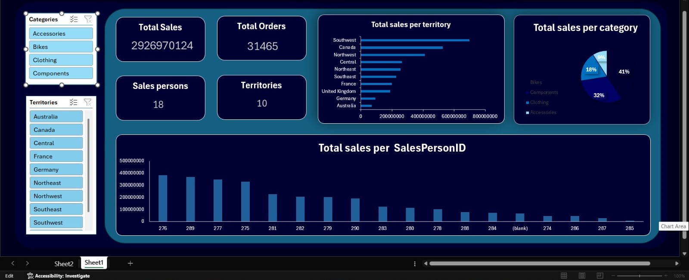
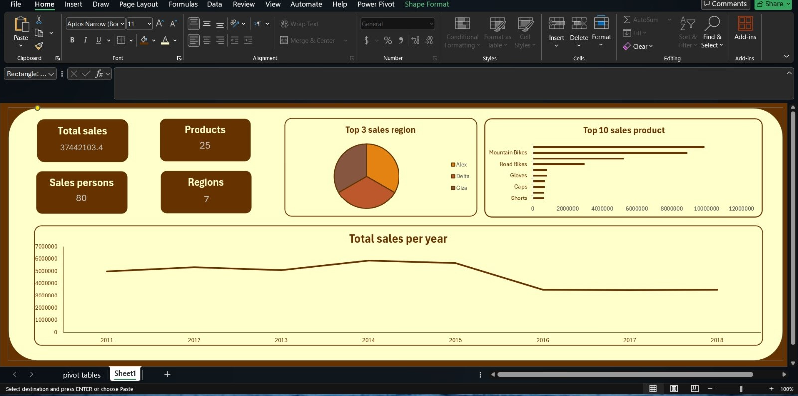
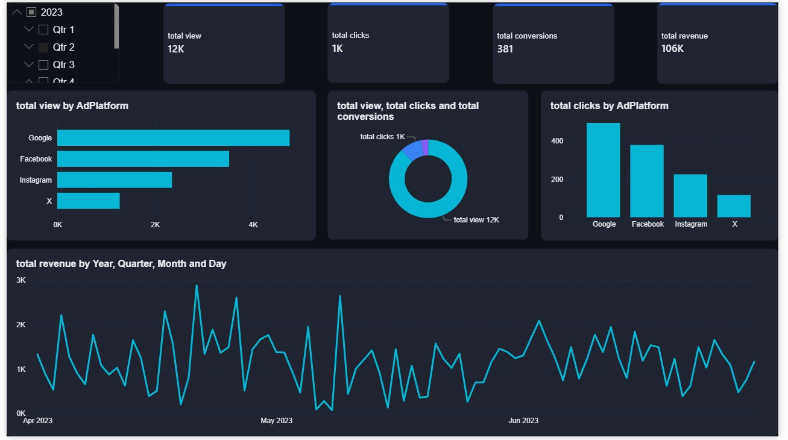
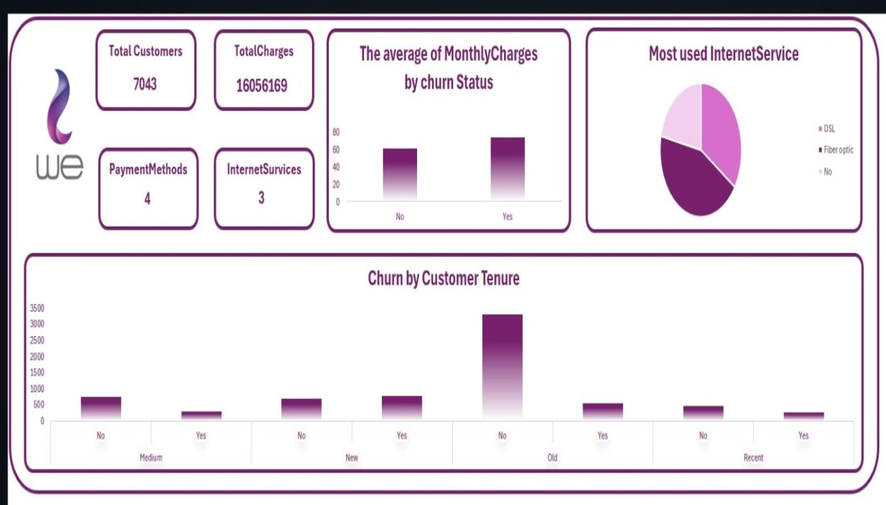

Aspiring Data Analyst — Bioinformatics Student @ Port Said University
I build dashboards and data stories with SQL, Excel, Python, Power BI, and Tableau — helping teams move from raw spreadsheets to confident, data-driven decisions.
I'm an aspiring bioinformatics student at Port Said University with a strong foundation in data analysis and problem-solving. I'm skilled in SQL, Excel, Python, Power BI, and Tableau, with the ability to analyze data, build interactive dashboards, and extract actionable insights that support data-driven decisions.
I trained as a Data Analysis Trainee at NTI (National Telecommunication Institute), where I practiced data cleaning, visualization, and business reporting, and worked on training projects focused on KPI tracking and extracting insights from real datasets. I'm looking to apply these analytical and technical skills to real-world projects while continuing to grow in data analysis and bioinformatics.
Turning inconsistent, raw exports into reliable, analysis-ready tables.
Building interfaces that surface the answer, not just the numbers.
Connecting every metric back to a decision someone needs to make.
Competitive programming background — 5th place, ICPC PSU Junior Phase.
Each project starts with raw data and ends as a dashboard that answers a real business question.


Designed an interactive sales dashboard using Excel/Power BI to analyze total sales, top-performing regions, yearly sales trends, and best-selling products. Built KPI cards and visual reports to support business decision-making and performance tracking.

Built a marketing analytics dashboard to track ad performance across multiple platforms including Google, Facebook, Instagram, and X. Analyzed views, clicks, conversions, and revenue trends to evaluate campaign effectiveness and audience engagement.

Developed a customer churn analysis dashboard for WE Telecom to identify churn patterns based on customer tenure, internet services, payment methods, and monthly charges. Used visual analytics to uncover customer behavior insights and support retention strategies.
Open to trainee, internship, and junior data analyst opportunities.